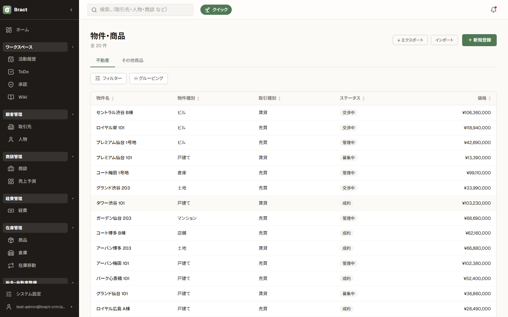
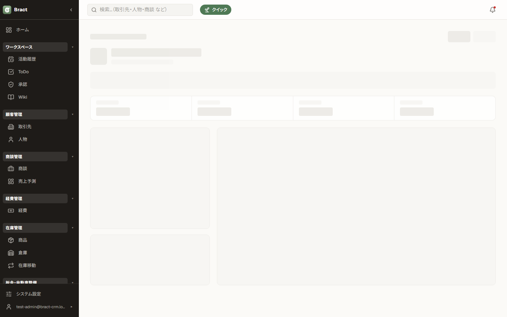
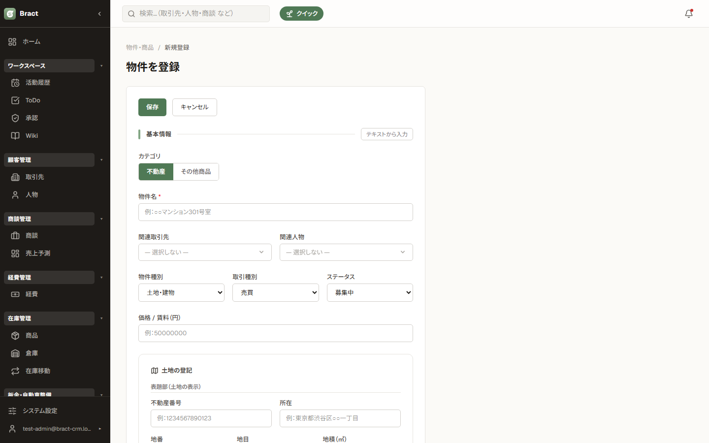
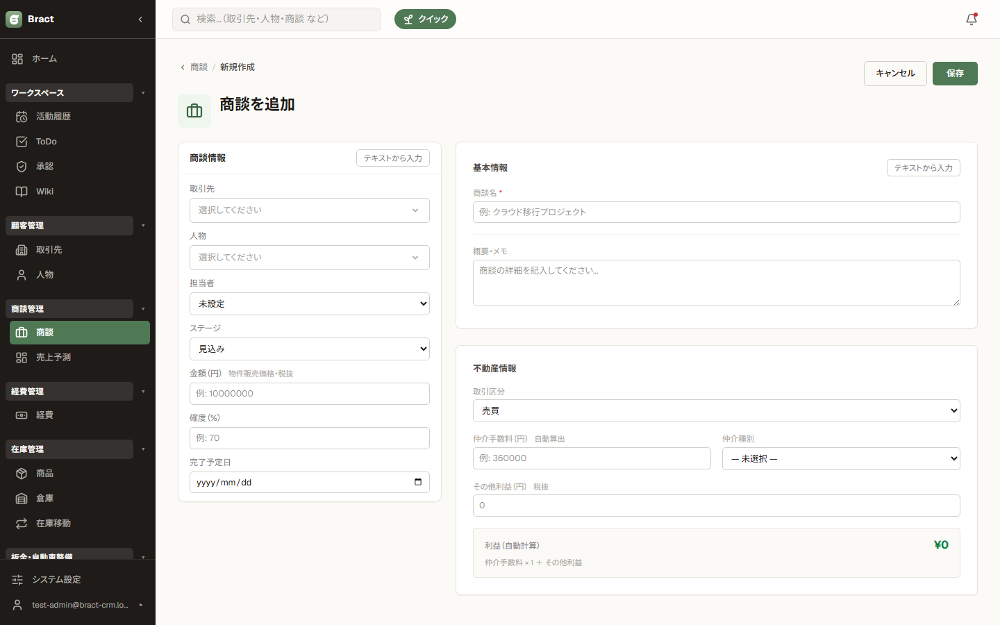
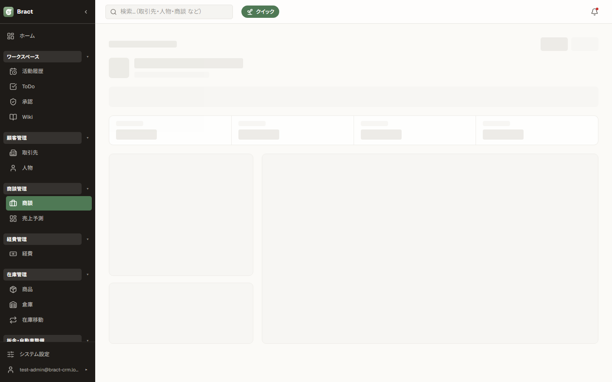

不動産 編
物件管理と、不動産仲介に特化した商談（仲介手数料の自動計算）を説明します。基本操作は共通編を参照してください。
この章の内容
1. 物件管理


取り扱い物件の台帳です。売買 / 賃貸の取引区分、マンション・戸建てなどの種別、価格・面積を管理し、 商談と紐づけて案件を追跡します。不動産以外の商材を扱う場合は「その他商品」カテゴリも使えます。
2. 物件の登録

- 物件一覧の ＋ 新規作成 を押します。
- 物件名・所在地・取引区分（売買 / 賃貸）・価格などを入力します。売主（取引先）や担当者も紐づけられます。
- 保存後、物件詳細から商談を作成すると物件情報が引き継がれます。
3. 商談の不動産情報（仲介手数料の自動計算）

| 取引区分 | 売買 / 賃貸。金額欄のラベルが「金額（物件販売価格）」/「月額賃料」に切り替わります。 |
|---|---|
| 仲介手数料 | 金額を入れると自動算出されます（売買: 速算式 3%＋6万円、賃貸: 月額ベース）。手で書き換えると自動同期が止まり、自動に戻す で再計算に戻せます。欄の下に内訳・実効率も表示されます。 |
| 仲介種別 | 片手 / 両手 など。両手の場合、利益は手数料 × 2 で計算されます。 |
| その他利益 | 手数料以外の収益（広告料など）を加算できます。 |
| 利益（自動計算） | 仲介手数料 ×（両手なら2）＋ その他利益 がその場で表示されます。 |
4. 財務サマリー

商談の詳細では、入力した取引区分・手数料から想定売上と粗利が自動集計されて表示されます。 パイプライン（ボード）や売上予測にもこの金額が反映されるため、二重入力は不要です。